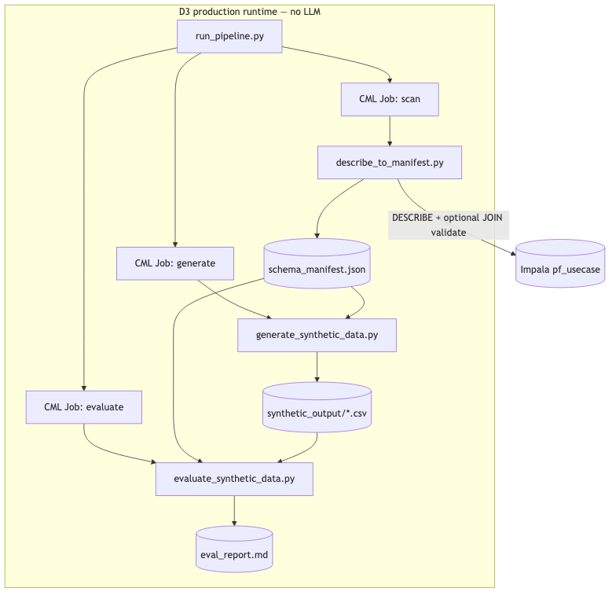
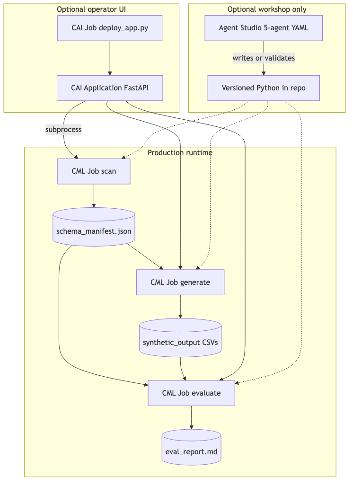
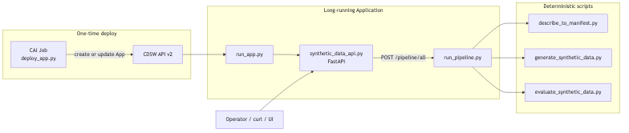
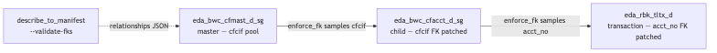

Synthetic Data Generation — Direction 3 Hands-On Lab¶
When to use D3¶
Choose Direction 3 when you need production ML training data — reproducible CSVs, deterministic FK enforcement, statistical evaluation gates, and optional CML Job automation:
| Choose D3 when… | Use D1/D2 instead when… |
|---|---|
Delivering 1k–1M+ rows per table with --seed reproducibility |
Teaching Agent Studio UI mechanics in a live workshop |
You need full schema parity (every DESCRIBE column present) or --strict evaluate gates |
Showcasing SDS generate/eval in one synchronous Agent Studio run → D2 |
Running CML Jobs or the CAI Application /pipeline/* endpoints on a schedule |
Generating scoped CSVs entirely inside Agent Studio Test → D1 |
| A new database where generation scripts do not exist yet (agentic mode authors them) | You only want to understand script structure without execution → optional D2.5 |
D3 exposes two modes in the same CAI Application:
| Mode | Trigger | LLM? | Best for |
|---|---|---|---|
| Deterministic | run_pipeline.py / /pipeline/* |
No | Scripts exist; known schema; reproducible runs |
| Agentic | synthetic_data_crew.py / /agent/* |
Yes (CrewAI) | Unknown schema; automated script authoring + optional Job dispatch |
The agentic crew is database-agnostic — it scans any Impala schema, writes timestamped generate_synthetic_data_*.py and evaluate_synthetic_data_*.py scripts, verifies them, and optionally dispatches CML Jobs. After the crew runs once, switch to deterministic mode with those scripts for faster, reproducible subsequent runs.
D3 is the only production direction. D1 and D2 are Agent Studio workshops — they lack reproducible scale, full schema parity, deterministic FK enforcement, and CI-gatable evaluation. See SYNTHETIC_DATA_WORKFLOWS_SUMMARY.md § Why only D3 is suitable for production.
Diagrams¶





Diagram PNGs: ../images/synthetic_data_workflow_d3/
Companion docs:
- D3_AGENTIC_REDESIGN_PLAN.md — agentic redesign plan
- CML_JOBS.md — Job definitions
- ../synthetic_data_app/README.md — CAI App deploy
Agentic crew — reference agent and task spec¶
The production agentic crew lives in synthetic_data_app/synthetic_data_crew.py (CrewAI). The blocks below are a generic reference spec — use them to understand roles when reading crew logs or when building the optional D2.5 Agent Studio workshop (same logical pipeline, stops after script authoring).
Agent 1 — Schema and Relationship Scanner¶
| Field | Value |
|---|---|
| Name | Schema and Relationship Scanner |
| Role | Lakehouse Schema Profiler and FK Inference Specialist |
| Backstory | You profile Impala tables with DESCRIBE, row counts, and lightweight column statistics. You infer foreign-key relationships from naming conventions, validate candidates with SQL join-count queries, flag PII-risk columns, and never export real row values — only aggregated stats and representative codes. |
| Goal | Profile every table in {target_tables}, infer FK relationships, derive a topological generation order (parents before children), and output a schema manifest JSON with full column lists. |
| Tools | ImpalaQueryTool (CrewAI wrapper over Impala SQL) |
Task — Schema and relationship scan (copy Description):
For each table in {target_tables} in the {database} database:
1. DESCRIBE the table — record EVERY column (name, type, nullable). The manifest must match the source table exactly.
2. SELECT COUNT(*) for row count.
3. Profile key columns only (identifiers, dates, amounts, status/type fields): GROUP BY top-20 for categoricals; MIN/MAX/AVG for numerics.
4. Flag PII-risk columns (id, name, email, phone, address patterns).
5. Infer FK relationships from column-name matches; validate with COUNT(DISTINCT ...) JOIN queries.
6. For wide tables (>200 columns), add wide_tables[].columns_to_populate listing semantic columns to actively synthesise; all other columns remain in the manifest for schema parity.
Output: schema_manifest.json with tables, generation_order, relationships, and wide_tables entries.
Agent 2 — Python Generation Strategist¶
| Field | Value |
|---|---|
| Name | Python Generation Strategist |
| Role | Synthetic Data Generation Planner |
| Backstory | You map each table category to the best Python approach: faker for lookups, SDV SingleTablePreset for masters, SDV PARSynthesizer for time-series transactions. You specify locale, surrogate ID formats, and special column rules. |
| Goal | Produce a generation strategy JSON mapping each table to library, providers, and special column rules. |
| Tools | None (LLM reasoning) |
Task — Generation strategy (copy Description):
Using the schema manifest, plan per-table generation:
- Lookup/reference tables: faker + manual code lists
- Customer/account masters: faker + SDV SingleTablePreset
- Transaction tables: SDV PARSynthesizer (time-series aware)
- Identify columns needing bank/person/address providers or custom surrogate formats
Output: strategy_map JSON listing table, category, library, providers, and special_columns.
Agent 3 — Statistical Evaluation Strategist¶
| Field | Value |
|---|---|
| Name | Statistical Evaluation Strategist |
| Role | Synthetic Data Quality Test Designer |
| Backstory | You design statistical validation: KS tests for numerics, chi-squared for categoricals, correlation diffs, null-rate fidelity, FK merge completeness, PII regex scans, and temporal coherence checks. |
| Goal | Produce an evaluation plan JSON specifying which tests apply to each table type. |
| Tools | None (LLM reasoning) |
Task — Evaluation strategy (copy Description):
Design the evaluation script strategy per table:
- KS (scipy) for numeric distributions
- Chi-squared for categoricals
- Pearson correlation-matrix diff for relationships
- pandas.merge for FK integrity (zero orphans required)
- Regex scans for PII leakage (email, phone, national ID patterns)
- Temporal coherence (created_at < updated_at, no future dates)
Output: evaluation_plan JSON with tests[] per table.
Agent 4 — Python Script Writer¶
| Field | Value |
|---|---|
| Name | Python Script Writer |
| Role | Reproducible Pipeline Script Author |
| Backstory | You write complete, executable Python scripts with argparse CLIs, fixed-seed randomness, progress logging, FK enforcement loops, and wide-table NULL-default handling for non-populated columns. |
| Goal | Write generate_synthetic_data_<timestamp>.py and evaluate_synthetic_data_<timestamp>.py implementing the strategies from Agents 2 and 3. |
| Tools | WriteFileTool |
Task — Code writing (copy Description):
Write two executable scripts to {output_scripts_dir}:
generate_synthetic_data_*.py:
- Reads schema_manifest.json
- Embeds GENERATION_ORDER and STRATEGY_MAP
- Per-table generators using faker/SDV per strategy
- FK enforcement via pandas against parent key pools
- argparse: --rows, --output, --tables, --seed
evaluate_synthetic_data_*.py:
- Implements tests from evaluation_plan
- Reports Cols(generated/manifest) per table
- PASS/FAIL FK integrity, PII scan, ML readiness summary
- argparse: --synthetic, --report, --strict
Both scripts must have if __name__ == "__main__" entrypoints.
Agent 5 — Code Quality Reviewer¶
| Field | Value |
|---|---|
| Name | Code Quality Reviewer |
| Role | Script Verifier and Job Dispatcher |
| Backstory | You read both scripts back, verify syntax, imports, GENERATION_ORDER coverage, FK wiring, and evaluation test coverage. When verdict is READY and Workbench credentials are set, you dispatch CML Jobs via the Workbench API. |
| Goal | Verify both scripts; return READY or NEEDS_FIXES with line-level issues; optionally dispatch generate/evaluate Jobs. |
| Tools | ReadFileTool, CmlJobTool |
Task — Script verification (copy Description):
Read both generated scripts and verify:
1. Syntax correctness and complete imports
2. GENERATION_ORDER covers every manifest table
3. Child FK columns reference correct parent pool variables
4. Evaluation script tests cover lookup, master, and transaction types
5. Both scripts have argparse CLIs and __main__ entrypoints
Output JSON: verification flags, issues[] with line references, verdict READY|NEEDS_FIXES.
If READY and CAI_WORKBENCH_* credentials are set, dispatch CML Jobs; otherwise print manual run instructions.
Step-by-step — run agentic mode¶
Follow these steps after the CAI Application is deployed (see CAI Application — step-by-step launch below).
1. Configure agentic environment variables¶
In Project → Settings → Environment Variables, set the deterministic variables (Impala + paths) plus:
| Variable | Purpose |
|---|---|
LLM_API_BASE_URL |
OpenAI-compatible chat API base URL |
LLM_API_KEY |
API key for the LLM |
LLM_MODEL |
Model name (e.g. gpt-4o) |
CAI_WORKBENCH_HOST |
Workbench URL for CmlJobTool |
CAI_WORKBENCH_API_KEY |
Workbench API v2 key (defaults to CDSW_APIV2_KEY) |
OUTPUT_SCRIPTS_DIR |
Where Agent 4 writes scripts (e.g. /home/cdsw/generated_scripts) |
2. Start the crew¶
Via Application UI: open the Application URL → Agentic Pipeline section → enter target_database, target_tables, rows_per_table → Kickoff.
Via curl:
curl -X POST "$APP_URL/agent/kickoff" \
-H "Content-Type: application/json" \
-d '{
"target_database": "<your_database>",
"target_tables": "source_customers,source_accounts,source_transactions",
"rows_per_table": 1000
}'
3. Monitor progress¶
Watch for task transitions: schema scan → generation strategy → evaluation strategy → code writing → verification → optional Job dispatch.
4. Review outputs¶
| Output | Location |
|---|---|
| Schema manifest | MANIFEST_PATH (e.g. /home/cdsw/artifacts/schema_manifest.json) |
| Generated scripts | OUTPUT_SCRIPTS_DIR/generate_synthetic_data_*.py, evaluate_synthetic_data_*.py |
| Synthetic CSVs | OUTPUT_DIR after Jobs or manual run_pipeline.py generate |
| Evaluation report | REPORT_PATH after Jobs or manual run_pipeline.py evaluate --strict |
5. Switch to deterministic mode for repeat runs¶
Once scripts exist, skip the crew and run:
Or call POST $APP_URL/pipeline/all with the same target_tables and rows.
Learn script authoring interactively first
To walk through Agents 1–4 inside Agent Studio without CML Job dispatch, use the optional workshop Direction 2.5. It stops after writing scripts — D3 agentic mode continues through verification and Job dispatch.
Files to upload into the CAI project¶
If you are deploying from scratch (not cloning the git repo), upload the following files. The Application expects both folders at the CAI project root (siblings of each other).
synthetic_data_app/
│ ├── run_app.py ← CAI Application entry point (set as Application script)
│ ├── deploy_app.py ← CAI Job script — registers the Application via API v2
│ ├── synthetic_data_api.py ← FastAPI server (/pipeline/* + /agent/*)
│ ├── synthetic_data_crew.py ← CrewAI 5-agent crew (agentic mode only)
│ ├── requirements.txt ← fastapi, crewai, impyla, etc.
│ └── static/
│ └── index.html ← Web UI
synthetic_data_workflow_d3/
├── run_pipeline.py ← CLI orchestrator
├── describe_to_manifest.py ← Step 1 · Scan
├── generate_synthetic_data.py← Step 2 · Generate
├── evaluate_synthetic_data.py← Step 3 · Evaluate
├── test_impala_connection.py ← Connection test helper
├── requirements.txt ← faker, pandas, impyla, scipy, etc.
└── schema_manifest.sample.json ← Offline demo manifest (no Impala needed)
If you are using the provided project template, all files are already present. Only environment variables and the deploy Job need to be configured.
CAI Application — step-by-step launch¶
Step 1 — Create or open a CAI Workbench project¶
Use Python 3.11 runtime (PBJ standard: ml-runtime-pbj-jupyterlab-python3.11-standard:2026.04.1-b7).
The project must have network access to Impala CDW.
Step 2 — Upload files¶
Ensure both folders are present as described above.
Step 3 — Set Project Environment Variables¶
In Project → Settings → Environment Variables add at minimum:
Deterministic mode (always required)¶
| Variable | Example value | Used by |
|---|---|---|
IMPALA_HOST |
hue-impala-gateway.datalake.…:443 |
scan |
IMPALA_USER |
<impala_user> |
scan |
IMPALA_PASS |
<impala_password> |
scan |
IMPALA_DB |
<your_database> |
scan |
TARGET_TABLES |
source_customers,source_accounts,source_transactions |
all |
ROWS |
1000 |
generate |
SEED |
42 |
generate |
MANIFEST_PATH |
/home/cdsw/artifacts/schema_manifest.json |
all |
OUTPUT_DIR |
/home/cdsw/artifacts/synthetic_output |
generate, evaluate |
REPORT_PATH |
/home/cdsw/artifacts/eval_report.md |
evaluate |
PIPELINE_DIR |
/home/cdsw/synthetic_data_workflow_d3 |
app startup |
Agentic mode (only needed for /agent/*)¶
| Variable | Example value | Used by |
|---|---|---|
LLM_API_BASE_URL |
https://api.openai.com/v1 |
crew LLM (OpenAI-compatible chat API) |
LLM_API_KEY |
sk-... |
crew LLM |
LLM_MODEL |
gpt-4o |
crew LLM |
CAI_WORKBENCH_HOST |
https://ml-xxxx.cloudera.site |
CmlJobTool |
CAI_WORKBENCH_API_KEY |
<workbench API v2 key> |
CmlJobTool (defaults to CDSW_APIV2_KEY) |
CDSW_PROJECT_ID |
Auto-set on CAI Workbench (optional override) | CmlJobTool |
OUTPUT_SCRIPTS_DIR |
/home/cdsw/generated_scripts |
Agent 4 writes scripts here |
Deprecated aliases still read by the crew:
CAI_BASE_URL,CAI_URL,CAI_API_KEY,CAI_MODEL,CAI_WORKBENCH_PROJECT_ID.
Step 4 — Create the deploy Job¶
In Project → Jobs → New Job:
| Setting | Value |
|---|---|
| Name | Deploy Synthetic Data App |
| Script | synthetic_data_app/deploy_app.py |
| Runtime | Python 3.11 PBJ standard |
| Resources | 1 CPU / 4 GB RAM |
| Kernel | python3 |
Step 5 — Run the deploy Job¶
Click Run. The Job calls CDSW API v2 to register (or update) the Application and exits in under a minute. Check the Job log for:
App Script : /home/cdsw/synthetic_data_app/run_app.py
Application created: <id>
Application URL : https://<workbench>/synthetic-data-<project_id>
If the Application fails with Startup script 'run_app.py' does not exist, the registration still points at the old script path — re-run this deploy Job after syncing the latest deploy_app.py.
Step 6 — Open the Application¶
Go to Project → Applications. Click the Synthetic Data Pipeline URL. The web UI loads with two sections: Deterministic Pipeline and Agentic Pipeline.
Step 7 — Run the pipeline¶
Via the UI, or with curl:
export APP_URL="https://<workbench>/synthetic-data-<project_id>"
# Run deterministic end-to-end (scan + generate + evaluate)
curl -X POST "$APP_URL/pipeline/all" \
-H "Content-Type: application/json" \
-d '{
"target_tables": "source_customers,source_accounts,source_transactions",
"rows": 1000,
"seed": 42
}'
# Poll events while running
curl "$APP_URL/api/workflow/events?since=0"
# Download the evaluation report
curl "$APP_URL/artifacts/report" -o eval_report.md
Overview¶
| Step | Script | Output |
|---|---|---|
| 1. Scan | describe_to_manifest.py |
schema_manifest.json |
| 2. Generate | generate_synthetic_data.py |
synthetic_output/*.csv |
| 3. Evaluate | evaluate_synthetic_data.py |
eval_report.md |
Orchestrator (deterministic): run_pipeline.py scan | generate | evaluate | all | batch-generate
Agentic flow (all five steps handled by the crew):
| Agent | Role | Tool |
|---|---|---|
| 1. Schema Scanner | DESCRIBE + FK validation | ImpalaQueryTool |
| 2. Generation Strategist | Pick faker / SDV strategy | LLM reasoning |
| 3. Evaluation Strategist | Design KS/chi²/PII tests | LLM reasoning |
| 4. Code Writer | Write scripts to disk | WriteFileTool |
| 5. Script Verifier | Verify + dispatch CML Jobs | ReadFileTool + CmlJobTool |
Prerequisites¶
- CAI Workbench project with Python 3.11 runtime.
- Impala credentials:
IMPALA_HOST,IMPALA_USER,IMPALA_PASS,IMPALA_DB(for live scan and agentic mode). - For agentic mode:
LLM_API_BASE_URL,LLM_API_KEY,LLM_MODEL,CAI_WORKBENCH_HOST,CDSW_PROJECT_ID. - Local-only demo (deterministic): bundled
schema_manifest.sample.json(no Impala or LLM required).
# Deterministic mode deps
cd synthetic_data_workflow_d3
pip install -r requirements.txt
# Agentic mode adds crewai
cd synthetic_data_app
pip install -r requirements.txt
Lab 1 — Local demo (3-table FK chain)¶
Step 1: Generate¶
python run_pipeline.py generate \
--manifest schema_manifest.sample.json \
--target-tables source_customers,source_accounts,source_transactions \
--rows 1000 --seed 42 \
--output /home/cdsw/artifacts/synthetic_output
Step 2: Evaluate¶
python run_pipeline.py evaluate \
--manifest schema_manifest.sample.json \
--output /home/cdsw/artifacts/synthetic_output \
--report /home/cdsw/artifacts/eval_report.md \
--target-tables source_customers,source_accounts,source_transactions \
--strict --use-scipy
Acceptance criteria¶
- 3/3 tables PASS
- FK orphan count = 0 on
customer_idandaccount_noedges source_transactionsschema PARTIAL (10 populated / 10 defaulted — expected for wide-table demo)- Re-run with same
--seed 42→ identical CSVs
Lab 2 — Live Impala scan + pipeline¶
Set environment variables in your CAI project, then:
export TARGET_TABLES=source_customers,source_accounts,source_transactions
export ROWS=1000
export SEED=42
export MANIFEST_PATH=/home/cdsw/artifacts/schema_manifest.json
export OUTPUT_DIR=/home/cdsw/artifacts/synthetic_output
export REPORT_PATH=/home/cdsw/artifacts/eval_report.md
python run_pipeline.py all --validate-fks --profile-stats --strict
Review inferred FK relationships in the manifest before trusting generate output.
Lab 3 — Deploy CAI Application (deterministic + agentic)¶
- Copy
synthetic_data_app/andsynthetic_data_workflow_d3/into your project root. - Set env vars — see
synthetic_data_app/README.mdfor the full list (includes LLM + Workbench vars for agentic mode). - Create a Job running
deploy_app.py. - Open the Application URL — the UI shows both Deterministic Pipeline and Agentic Pipeline sections.
Deterministic endpoint:
curl -X POST "$APP_URL/pipeline/all" \
-H "Content-Type: application/json" \
-d '{"target_tables": "source_customers,source_accounts,source_transactions", "rows": 1000}'
Agentic endpoint (database-agnostic — works with any schema):
# Start crew async
curl -X POST "$APP_URL/agent/kickoff" \
-H "Content-Type: application/json" \
-d '{"target_database": "my_custom_db", "target_tables": "all", "rows_per_table": 1000}'
# Poll events
curl "$APP_URL/agent/events?since=0"
Lab 3b — Agentic crew without the Application¶
Run the crew directly as a CLI or CML Job:
cd synthetic_data_app
export LLM_API_BASE_URL=https://api.openai.com/v1
export LLM_API_KEY=sk-...
export LLM_MODEL=gpt-4o
export IMPALA_HOST=...
python synthetic_data_crew.py \
--database <your_database> \
--tables source_customers,source_accounts,source_transactions \
--rows 1000 --seed 42 \
--scripts-dir /home/cdsw/generated_scripts \
--output-dir /home/cdsw/synthetic_output
The crew will: scan schema → plan generation → plan evaluation → write scripts → verify → dispatch CML Jobs (if Workbench env vars are set) or print instructions for manual Job creation.
Lab 4 — Full scale-out¶
export TARGET_TABLES=all
python run_pipeline.py scan --validate-fks --profile-stats
# Run as parallel CML Jobs (one per prefix):
python run_pipeline.py batch-generate
python run_pipeline.py evaluate --strict --use-scipy
See CML_JOBS.md for per-prefix Job definitions (prefix_a_, prefix_b_, …).
Choosing between deterministic and agentic mode¶
| Question | Answer | Mode |
|---|---|---|
| Are scripts already written and working for this schema? | Yes | Deterministic |
| Is this a new database you have not profiled before? | Yes | Agentic |
| Do you need fully reproducible bit-identical output? | Yes | Deterministic |
| Do you need the LLM to handle column naming it has never seen? | Yes | Agentic |
| Do you have LLM / Workbench API credentials? | No | Deterministic only |
The agentic crew writes timestamped scripts into output_scripts_dir (e.g. generate_synthetic_data_20250621_193045.py and matching evaluate_synthetic_data_*.py). After the crew runs once, you can switch to deterministic mode and run those scripts directly with run_pipeline.py for faster, reproducible subsequent runs.
Optional — Agent Studio authoring workshop (D2.5)¶
Use Direction 2.5 for the same scan → strategy → script pipeline inside Agent Studio, stopping after script generation (no CML Jobs).
The 5-agent YAML in synthetic_data_workflow_d3/agents.yaml + tasks.yaml is a reference spec; the trimmed D2.5 import lives in extra_materials/synthetic_data_workflow_d2_5/. Production automation uses agentic mode in synthetic_data_crew.py (CAI Application /agent/*) or deterministic run_pipeline.py.
Troubleshooting¶
| Symptom | Fix |
|---|---|
| Evaluate FAIL on missing 4th table | Pass --target-tables matching what you generated |
| FK orphans | Re-scan with --validate-fks; fix relationships join column |
| Wide table schema FAIL | Expected: PARTIAL when using columns_to_populate |
| Job exit code 1 | Check --strict evaluate output; missing CSV or FK failure |
Agentic: crewai not installed |
pip install -r synthetic_data_app/requirements.txt |
Agentic: ImpalaQueryTool ERROR |
Set IMPALA_HOST, IMPALA_USER, IMPALA_PASS env vars |
Agentic: CmlJobTool: missing credentials |
Re-run deploy Job so CAI_WORKBENCH_HOST, CAI_WORKBENCH_API_KEY, and CDSW_PROJECT_ID are injected. Check /agent/events for CML credentials: line. |
Agentic: crew completes but NOT_DISPATCHED |
Scripts may exist at /home/cdsw/generated_scripts/ — crew now auto-dispatches after Agent 5. Re-sync synthetic_data_crew.py and re-run; or run scripts manually via deterministic /pipeline/*. |
| Agentic: schema scan AVG errors on string columns | Non-fatal — scanner now skips AVG on non-numeric columns. Re-sync synthetic_data_crew.py. |
| Agentic: crew stalls on code_writing task | LLM may need a larger context model; check LLM_MODEL |
Application: Startup script 'run_app.py' does not exist |
Re-run the deploy Job (synthetic_data_app/deploy_app.py). The app must use /home/cdsw/synthetic_data_app/run_app.py, not bare run_app.py. |
pip dependency conflict warnings (packaging, protobuf, requests) |
Re-sync synthetic_data_app/constraints-cai.txt and restart. Harmless if the app prints Dependencies ready. and starts. |
ModuleNotFoundError: No module named 'synthetic_data_api' |
CAI runs apps in a Jupyter kernel where __file__ is unset. Re-sync run_app.py (uses APP_DIR=/home/cdsw/synthetic_data_app) and re-run deploy Job. |